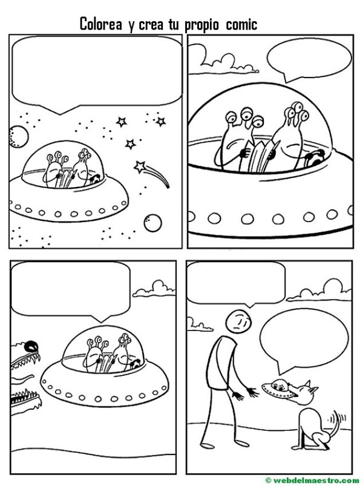
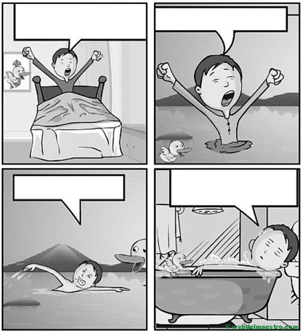
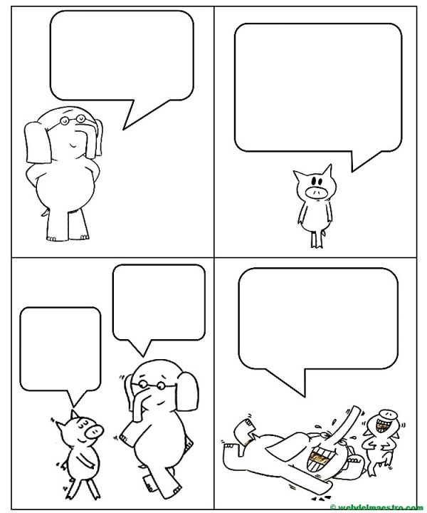
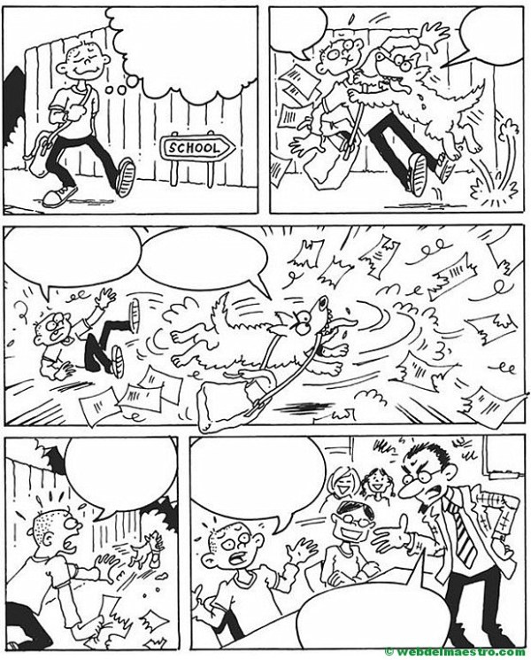
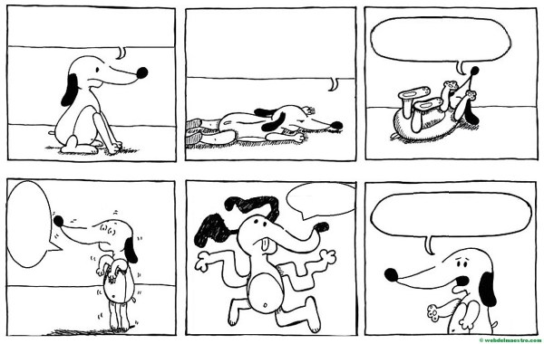
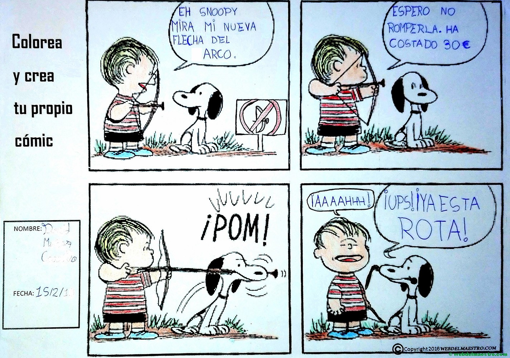
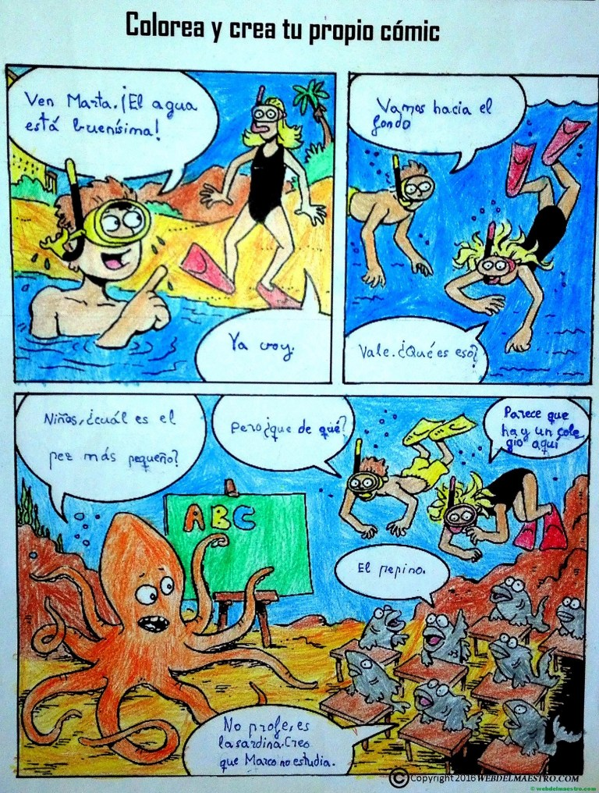

LOS COMICS
Por: Juan Pablo Ventura Fecha: 01 de Octubre del 2020
Un cómic es una serie o desarrollo de viñetas con desarrollo narrativo. También se puede definir como relato gráfico breve y entretenido que consta principalmente de dibujos encuadrados en viñetas y que encierra los diálogos o pensamientos escritos de sus personajes en una especie de «burbuja».
Los cómics también reciben el nombre de historietas.
Existen cómics mudos, que constan sólo de imágenes, tan expresivas, que no necesitan palabras para ser entendidos.
Ventajas de los comics
Entre las ventajas que aporta la realización de cómics en el aula destacan las siguientes:
¿Como hacer un comic?
Para hacer un comic te aconsejo realizar los siguientes pasos:
Modelos de cómics mudos con bocadillos para niños.
La temática de estos cómics está basada fundamentalmente en animales y otros intereses que gustan a los niños/as y pretenden fomentar la creación de cómics por los propios niños.
DESCARGA LOS CÓMICS debajo de cada imagen.

¡DESCARGA AQUI!

¡DESCARGA AQUI!

¡DESCARGA AQUI!

¡DESCARGA AQUI!

¡DESCARGA AQUI!

